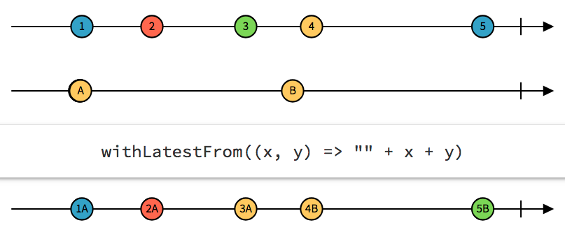

How Reactive Programming simplifies complicated Frontend applications
Yours Truly, Famous Inc.
Who I am...
8 years as JavaScript Developer
eWizard.js Team Lead
Frontend Tech Lead
IT Academy Lead
My interests: JS, Node.js, Functional /
Fb: anna.dederkal.1
eWizard
A content management platform
Top pharma companies
> 50 countries
eWizard
about platform
Who you are...
Are you doing Vue?
Are you doing Vuex?
Are you doing Rx.js?
Are you doing Vue-rx?
Are you happy with what you're doing?
What reactive programming is...
А тепер давайте згадаємо або заново розберемось, що таке
Функціональне програмування. А для того, щоб це зробити, нам потрібно
відповісти на питання: Що означає бути Реактивним?
Reactive programming is a declarative programming paradigm concerned with data streams and the propagation of change (Wikipedia)
Reactive programming is programming with asynchronous data streams.(André Staltz)
Це декларативна програмна парадигма, що пов'язана із потоками даних та поширенням змін (Вікіпедія)
Реактивне програмування - це програмування з асинхронними потоками даних (Андре Сталдз?)
Однозначного і простого визначення реактивного програмування немає, щоб одразу все зрозуміти.
Але ми розберемось далі на прикладі, що означає "поширення зміни" і "потік даних"
Not Reactive Code
let a = 1;
let b = 2;
let sum = a + b;
console.log(sum); // 3
a = 2;
console.log(sum); // ? 3
Розглянемо простенький приклад.
Який результат буде виведений в консоль за другим разом? - 3,
так як змінна з сумою ми не оновили.
Reactive Code
let a = 1;
let b = 2;
let sum = a + b;
console.log(sum); // 3
a = 2;
console.log(sum); // ? 4
цей самий приклад, але якщо цей код є реактивним, то
в результаті ми побачимо в консолі 4. Ось це - магія реативності.
Коли нам не потрібно нічого робити, а зміни значень поширились
автоматино.
Excel Example
gif
Найбільш відомий всім приклад реактивної системи - це excel.
Зміни в одній комірці автоматично поширюються на всі комірки,
які від неї залежать.
Stream - is like array in time
CATS image
Тепер коли ми вже знаємо що таке поширення змін, давайте
подивимось, що таке потік - це як масив, елементи якого з'являються
з часом
Stream Example
button.addEventListener(event => {
console.log(event);
});
Насправді, для нас тут нічого нового. Тому що навіть звичайний
обробник події - це дійсно асинхронний Потік - Event Stream.
На який ми можемо підписатись і робити якісь сайд ефекти.
Streams: variables, user inputs, properties, events, etc.
Але ми ж можемо створити Потік не лише з обробника події, а з будь-чого:
із змінної, властивості, даних, введених користувачем...
Будь-що може бути Потоком...
Pull vs Push
Реактивна система підтримує push підхід
Iterator
let iterator = someString[Symbol.iterator]();
iterator.next(); // { value: "h", done: false }
iterator.next(); // { value: "i", done: false }
iterator.next(); // { value: undefined, done: true }
Давайте розглянемо, що ми маємо в JS для колекцій - це Ітератор
Ітератори корисні для колекцій, однак асинхронні дії додають
час в наш код. А Ітератори не дуже добре з цим справляються.
Ми ніяк не можемо дізнатись, коли в колекції вже є нове значення.
Що ж ми можемо зробити? Здається нам pull підхід потрібно
змінити на push. А ми знаємо, що для push підходу в JS є колбеки.
Якщо об’єднати Ітератор і колбек, в нас вийде Observable
Observable is basically an Iterable turned inside out
Think of the Observable class as a “push” equivalent to Iterable, which is a “pull”
let observer = {
next: (x) => console.log(x)
}
myObservable[Symbol.observer](observer);
In Rx.js
myObservable.subscribe(function next(x)) {
console.log(x);
});
Тепер коли ми знаємо, що таке Observable, ми можемо
познайомитись з rxjs
Rx - Reactive eXtensions
RxJS is one of the hottest libraries in web development today.
Offering a powerful, functional approach for dealing with events
and with integration points into a growing number of frameworks,
libraries, and utilities, the case for learning Rx has never been
more appealing. Couple this with the ability to utilize your
knowledge across nearly any language, having a solid grasp on
reactive programming and what it can offer seems like a no-brainer.
An API for asynchronous programming
with observable streams
Simple Example
button.addEventListener(event => {
console.log(event);
});
fromEvent(button, 'click')
.subscribe(event => console.log(event));
Observable Stream
fromEvent(button, 'click') // Observable
.subscribe(event => console.log(event)); // Observer
Тут пояснити, що таке observable i observer
Rx is a combination of the best ideas from
the Observer pattern, the Iterator pattern, and functional programming
Operators
Pure functions
Filter, select, transform, combine, and compose Observables
Efficient execution
Operators are the horse-power behind observables,
providing an elegant, declarative solution to complex
asynchronous tasks.
Operators
map
flatMap
concat
switchMap
throttle
Operators Example
import { concat, filter } from 'rxjs/operators';
import { of } from 'rxjs';
const sourceOne = of(1, 2, 3);
const sourceTwo = of(4, 5, 6);
const example = sourceOne.pipe(
concat(sourceTwo),
filter(num => num % 2 === 0)
);
example.subscribe(val => console.log(val));
// 2,4,6
//emit values from sourceOne, when complete, subscribe to sourceTwo
But WTH I need this Reactive stuff?
А тепер давайте розберемось як працює Node.js, щоб зрозуміти як можна
оптимізувати наш конвертор.
Let’s think about writing complex SPA (using Vue)
Managing state stuff is hard.
Vuex makes it simple (not necessarily easy)
but there is a problem with Vuex: it doesn’t do anything to help you manage async code.
Frontend Development: mostly synchronous or asynchronous?
We tend to think synchronously. We write code in blocks that are read top to bottom, left to right. If this, then this, else this…
But the truth is:
What are we doing with code?
Handling user input, DOM events
Animations
AJAX/JSONP
Web Sockets/SSE
Updating DOM
Що ми зазвичай робимо на фронтенді? А тепер давайте подивимось, що з цього є асинхронним?
А правда в тому, що Лише робота з DOM є синхронною
Managing async stuff is harder
Objections?
Я впевнена, що в цей момент наша аудиторія всередині розділилась на два табори: одні кивають на знак підтримки, і згодні зі мною.
А інші - звісно проти, бо для чого вводити ще щось нам в проекти, якщо на фронтенді достатньо натівних засобів для того, щоб управляти асинхронністю.
Дехто, можливо недавно тільки розібрався з промісами і асінк евейтами. Що ж Rx може нам дати? Звісно, крім того, що можна повипендрюватись трохи ))
How Rx helps to manage async stuff?
Observables are cancelable
Rx operators make magic
Проресьорчити це Observables are cancelable
- Можливістю легко управляти асинхронними діями, які потребують якохсь додаткової логіки управління - при допомозі операторів.
- Можливістю відмінити дію. Що з промісами зробити не можливо. Наприклад, при переході між роутами аппа, чи завжди ми відміняємо запити, які були вже надіслані?
Showcases
А тепер давайте подивимось реальні приклади
Drag-n-drop functionality example with optimization
Video of example
Create Streams from Mouse Events
mousedown$ = fromEvent(body, 'mousedown')
.pipe(map(getCoordsFromEvent));
mousemove$ = fromEvent(body, 'mousemove')
.pipe(map(getCoordsFromEvent));
mouseup$ = fromEvent(body, 'mouseup')
.pipe(map(getCoordsFromEvent));
Давайте розглянемо приклад, як при допомозі Rx легко реалізувати такий драг-дроп з оптимізацією пересування компонентів.
Частину функцій я не буду розглядати, думаю вони інтуїтивно мають бути зрозумілі, адже наша ціль, це зрозуміти головний концепт.
And transform them to Drag Events
const dragstart$ = mousedown$
.pipe(flatMap(() => mousemove$.pipe(takeUntil(mouseup$),take(1))));
const dragmove$ = mousedown$
.pipe(flatMap(() => mousemove$.pipe(takeUntil(mouseup$))));
const dragend$ = dragstart$
.pipe(flatMap(() => mouseup$.pipe(take(1))));
Then take a dragged element
const dragElement$ = dragstart$
.pipe(
map(({ x, y }) => document.elementFromPoint(x, y)),
tap(dragEl => dragEl.classList.add('active')),
share(),
);
And create a preview element
const previewElement$ = dragstart$
.pipe(
withLatestFrom(dragElement$),
map(([{ x, y }, dragEl]) => createPreviewElement(dragEl, x, y)),
tap(previewElement => body.appendChild(previewElement)),
share(),
);
withLatestFrom

Whenever the source Observable emits a value, it computes a
formula using that value plus the latest values from other input
Observables, then emits the output of that formula.
Now move a preview element
const movePreviewElement$ = dragmove$
.pipe(
withLatestFrom(previewElement$),
tap(([{ x, y }, previewEl]) => {
movePreviewElement(previewEl, x, y))
}),
);
And move dragged element itself
const moveDragElement$ = dragmove$
.pipe(
withLatestFrom(dragElement$),
tap(([{ x, y }, dragEl]) => moveDragElement(dragEl, x, y)),
);
Але ми хочемо добитись результату, щоб не на всі рухи мишкою
наш редактор реагував.
sampleTime
Emits the most recently emitted value from the source
Observable within periodic time intervals.
Optimize element movement
const moveDragElement$ = dragmove$
.pipe(
withLatestFrom(dragElement$),
sampleTime(200),
tap(([{ x, y }, dragEl]) => moveDragElement(dragEl, x, y)),
);
Then drop the element
const finishMovement$ = dragend$
.pipe(
withLatestFrom(previewElement$, dragElement$),
tap(([_, previewEl, dragEl]) => {
previewEl.remove();
dragEl.classList.remove('active');
}),
);
Don't forget to subscibe
movePreviewElement$.subscribe(() => {});
moveDragElement$.subscribe(() => {});
finishMovement$.subscribe(() => {});
That's it! So simple
я не буду приводити код на JS для того, щоб написати цей приклад,
адже думаю, що всі з присутніх можуть уявити як би потрібно було
реалізувати це при допомозі таймаутів і if патерна
Save Example
Video
А тепер розглянемо приклад з Vue алікейшена як реалізувати
функціональність save кнопки з різними статусами.
Vue.js + Rx.js
Для інтергації Vue з Rx є бібліотека
vue-rx
RxJS integration for Vue.js.
Handles subsribtion/unsubscription for you.
Це офіційна бібліотека від розробників Vue.
я не буду розказувати про підклюення, лише про основну ціль
Subscriptions
export default {
name: 'save-changes',
subscriptions: function () {
return {
statusMessage: new Observable(...)
}
}
};
{{ msg }}
v-stream
Save
export default {
name: 'save-changes',
domStreams: ['save$'],
subscriptions () {
return {
statusMessage: this.save$.pipe(
map(() => 'Saving')
)
}
}
};
vue-rx provides the v-stream directive which allows you
to stream DOM events to an Rx Subject. The syntax is similar to v-on
where the directive argument is the event name, and the binding value
is the target Rx Subject.
Vuex Store
Store
const store = {
state: {
status: Status.Initial,
},
mutations: {
setStatus(state, { status }) {
state.status = status;
},
},
actions: {
save({ commit }) {
commit('setStatus', { status: Status.Saving });
saver.save();
},
setStatus({ dispatch, commit }, data) {
commit('setStatus', data);
},
},
};
Vue-rx - Vuex communication
export default {
name: 'save-changes',
domStreams: ['save$'],
subscriptions () {
return {
statusMessage: this.save$.pipe(
map(() => 'Saving')
)
}
},
methods: {
...mapActions('saveModule', ['save'])
}
};
export default {
name: 'save-changes',
domStreams: ['save$'],
subscriptions () {
const status$ = this.$watchAsObservable('status', { immediate: true })
.pluck('newValue')
.share();
return {
statusMessage: status$.map(this.getStatusMessages),
}
},
computed: {
...mapState('saveModule', ['status']),
}
};
In what part of Vue app Rx may be used?
OMG Rx.js is so confusing!
Stop worrying about the operators
Seriously!
Rx.js заставляє тебе почуватись зляканим, самотнім, безпомічним?
Перестань хвилюватись про те, який оператор використати...
Observables are not scarier than promises
promise.then(resolveFn);
observable.subscribe(nextFn);
Then try to use 'map' to chain observables.
Observables не страшніші, ніж проміси, якщо не використовувати оператори.
Ти можеш почати використовувати Observables прямо зараз. Просто,
підписуєшся на них і далі пишеш імперативний код.
What Operator Do I Use???
Remain calm, it's ok
Use operators that you know
Operator Decision Tree
DO NOT Rx All the things
You can build your app as one big observable...
Rx - дійсно потужна річ. І коли ви добре розібрались з ним і правильно
використовуєте, він робить ваш код добре читаємим, але ви повинні використовувати
його, де це дійсно найкрещ підходить
Use Rx where it's best suited
Composing multiple events together
Adding delay
Clientside backpressure
Coordination async tasks
When cancellation is required
1) для складного юі (як драг-дроп)
2) додавання різних затримок, таймаутів
3) контролювати back pressure потоку (debounce, throttle, sample)
Presentation Dev Builder
Crashes when 11 users run build concurrently
What should we do?
How Node.js works?
А тепер давайте розберемось як працює Node.js, щоб зрозуміти як можна
оптимізувати наш конвертор.
If you're writing anything more complicated than a brief command-line script,
reading this should help you write higher-performance, more-secure applications.
Node.js is good for
Node.js був спроектований, для того, щоб будувати високо-масштабовані
мережеві додатки, що працюють в реальному часі.
А це досягається завдяки не блокуючій асинхронній природі Node.js.
... because of Non-blocking Asynchronous Architecture
Давайте розглянемо на прикладі, що мається на увазі під Не бокуючою Асинхронною
Архітектурою.
Коли ви ідете в ресторан, офіціант приходить до столика, бере ваше замовлення і
йде на кухню. Після цього він може обслуговувати інший столик, в той час коли Шеф
готує вашу страву. Тобто одна людина може обслуговувати багато різних столиків.
Офіціант не повинен чекати поки повар приготує страву для одного столика перед тим
як обслуговувати інший. Це те що ми називаємо НЕ Блокуюча або Асинхронна архітектура.
І це як Node архітектура працює: офіціант - це як Один Потік, виділений, щоб
опрацьовувати одразу багато запитів.
На противагу Асинхронній архітектурі є Синхронна архітектура.
Уявіть, що ви пішли до іншого ресторану, де офіціант, що був вам виділений,
бере у вас замовлення, іде на кухню, передає Шефу і чекає поки ваше замовлення буде
готове. В цей момент він більше нічого не робить, не обслуговує інший столик, лише
чекає.
Це і називається Синхронною архітектурою. І це те як сервіси побудовані при
допомозі фреймворків Asp.net або Rails працюють з коробки.
Давайте подивимось як це працює в термінології сервера і процесів.
Коли на сервер приходить запит, виділяється процес, щоб його обробити.
І коли відбувається запит в базу даних, ми знаємо, що це може зайняти деякий
час. Протягом цього часу наш процес просто сидить і чекає, і він не може обслуговувати
іншого клієнта. Тобто нам для цього потрібен ще один процес.
Уявіть, що відбувається, коли нам потрібно опрацювати велику кількість
одночасних клієнтів. В деякий момент часу нам може не вистачити процесів,
щоб обслужити всіх цих клієнтів.
Тому новий клієнт буде мусити чекати поки з'явиться вільний процес.
Або якщо ми не хочемо, щоб він чекав, нам потрібно збільшити
потужності нашого сервера.
Але з такою архітектурою ми не використовуємо ресурси продуктивно.
І це проблема Блокуючої архітектури.
Давайте розглянемо як працює Node.js. Коли на сервер приходить
один запит, він обробляється процесом. Якщо в цей момент йому потрібно
почекати, поки опрацюється запит в базу даних, цей процес вже може
обслуговувати інший запит. Коли БД приготує результат, вона покладе
меседж в Event queue (чергу подій). Наш процес постійно моніторить
чергу подій, тому коли там з'явиться меседж, він його опрацює.
По суті, наш процес - це цикл, який постійно опрацьовує якісь
колбеки і запити, тому його і називають Event Loop.
Node.js is Single Threaded*
* Except when it's not
Аналізуючи те, що ми розглянули, ми можемо дійти висновку,що
Node.js - однопоточний. І це правда за винятком того, коли
НІ (це не так). І таке буває...
All JavaScript, V8, and the Event Loop run in one thread called
Main Thread*
* But Node.js has C++ code as well
Це означає, що весь JavaScript, тобто всі ваші файли,
JavaScript ноди (адже нода має частину, яка написана на JS),
більше того, сам V8, а також event loop. Весь цей код відпрацьовує
в одному єдиному потоці, який ми називаємо Головним потоком.
Worker Pool
Node's Worker Pool is implemented in libuv (docs), which exposes
a general task submission API.
What code runs on the Worker Pool?
I/O-intensive
DNS
File System
CPU-intensive
Crypto
Zlib
Node uses the Worker Pool to handle "expensive" tasks. This includes
I/O for which an operating system does not provide a non-blocking version,
as well as particularly CPU-intensive tasks.
Node's scalability = small
number of threads to handle many clients
If Node can make do with fewer threads, then it can spend more
of your system's time and memory working on clients rather than
on paying space and time overheads for threads (memory,
context-switching). But because Node has only a few threads, you must
structure your application to use them wisely.
Node is fast when the work associated with each client at any
given time is "small"
Do not block neither the Event Loop nor the Worker Pool:
Performance
Security
Performance: If you regularly perform heavyweight activity
on either type of thread, the throughput (requests/second) of your
server will suffer.
Security: If it is possible that for certain input one of your
threads might block, a malicious client could submit this
"evil input", make your threads block, and keep them from working
on other clients. This would be a Denial of Service attack.
The fair treatment of clients is thus the responsibility of your application.
Вже не ОС має стежити за рівноправністю клієнтів, а ви
This means that you shouldn't do too much work for any client
in any single callback or task.
Don't block
Don't use .sync() methods! Never! Ever!
They are executed in the Main thread, not in the Worker Pool
Encryption
Compression
File system
Child process
These APIs are intended for scripting convenience, but are not
intended for use in the server context. If you execute them on
the Event Loop, they will take far longer to complete than a typical
JavaScript instruction, blocking the Event Loop.
Regular Expression
A vulnerable regular expression is one on which your regular
expression engine might take exponential time, exposing you to
REDOS on "evil input".
Regular Expression: REDOS example
if (fileName.match(/(\/.+)+$/)) {
console.log('valid path');
}
// "//////////////////.../\n"
If a client queries with filePath ///.../\n (100 /'s followed by
a newline character that the regexp's "." won't match), then the Event Loop
will take effectively forever, blocking the Event Loop. This client's REDOS
attack causes all other clients not to get a turn until the regexp match
finishes.
Regular Expression: Best practices
Tools to check safety (safe-regex, rxxr2)
Node-re2 module, which uses Google's blazing-fast RE2 regexp engine
For obvious regexps use modules (ip-regex) or libs (regexlib.com)
JSON: DOS
JSON is blocking
50MB - 1.7 seconds to parse
JSON: Best practices
JSONStream
Big-Friendly JSON
To summarize:
Be cautious of user's input (not only validate)
Bound the input and reject inputs that are too long
Think of "computational complexity"
Safe RegExp
Async or Stream JSON
NO .sync()
Complex calculations without
Partitioning
Partition your calculations so that each runs on the Event Loop but
regularly yields (gives turns to) other pending events.
Save the state in a closure.
Partitioning Example
for (let i = 0; i < n; i++){
sum += i;
}
let avg = sum / n;
console.log('avg: ' + avg);
Partitioning Example
function asyncAvg(n, avgCB) {
let sum = 0;
function add(i, cb) {
sum += i;
if (i !== n) {
setImmediate(add.bind(null, i+1, cb));
} else {
cb(sum);
}
}
add(1, (sum) => avgCB(sum / n));
}
Partitioning isn't always a good choice
If you need to do something more complex, partitioning is not a good option.
This is because partitioning uses only the Event Loop, and you won't benefit
from multiple cores almost certainly available on your machine.
Remember, the Event Loop should orchestrate client requests, not fulfill
them itself.
Offloading
For a complicated task, move the work off of the Event Loop onto
another Thread.
This is because partitioning uses only the Event Loop, and you won't
benefit from multiple cores almost certainly available on your machine.
Remember, the Event Loop should orchestrate client requests, not fulfill
them itself. For a complicated task, move the work off of the Event Loop
onto a Worker Pool.
1. Offloading - built-in Node Worker Pool
C++ addon using N-API
node-webworker-threads module
You can use the built-in Node Worker Pool by developing a C++ addon.
On older versions of Node, build your C++ addon using NAN, and
on newer versions use N-API. node-webworker-threads offers
a JavaScript-only way to access Node's Worker Pool.
const Worker = require('webworker-threads').Worker;
require('http').createServer((req,res) => {
const fibo = new Worker(() => {
function fibo (n) {
return n > 1 ? fibo(n - 1) + fibo(n - 2) : 1;
}
this.onmessage = (event) => {
postMessage(fibo(event.data));
}
});
fibo.onmessage = (event) => res.end('fib(40) = ' + event.data);
fibo.postMessage(40);
}).listen(port);
2. Offloading - your own Worker Pool
Child Process
Cluster
You can create and manage your own Worker Pool dedicated to computation
rather than Node's I/O-themed Worker Pool. The most straightforward
ways to do this is using Child Process or Cluster.
You should not simply create a Child Process for every client. You
can receive client requests more quickly than you can create and manage
children, and your server might become a fork bomb.
Do not create a FORK BOMB
Cluster Example
const cluster = require('cluster');
const http = require('http');
const numCPUs = require('os').cpus().length;
if (cluster.isMaster) {
masterProcess();
} else {
childProcess();
}
Cluster Example
function masterProcess() {
console.log(`Master ${process.pid} is running`);
for (let i = 0; i < numCPUs; i++) {
console.log(`Forking process number ${i}...`);
cluster.fork();
}
process.exit();
}
Cluster Example
function childProcess() {
console.log(`Worker ${process.pid} started and finished`);
process.exit();
}
Downside of offloading - Communication Costs
For serialization concerns, see the section on JSON DOS.
Distinguish between CPU-intensive and I/O-intensive tasks because
they have markedly different characteristics
A CPU-intensive task only makes progress when its Worker is scheduled,
and the Worker must be scheduled onto one of your machine's logical cores.
If you have 4 logical cores and 5 Workers, one of these Workers cannot
make progress. As a result, you are paying overhead (memory and
scheduling costs) for this Worker and getting no return for it.
Presentation Dev Builder
Cluster was used
4 times more concurrent builds running ()
Is Node.js really a good fit?
Don't block you mind, Event Loop, Worker Pool